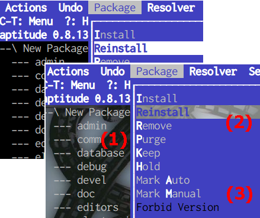
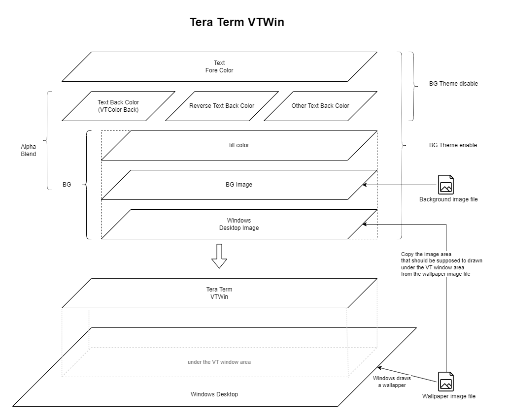

Theme Editor
テーマはTera Termの背景、文字の色、または、両方を一括して扱う枠組みです。
Theme Editorはテーマの編集を行うことができます。
複数のタブで設定を行います。
[OK] で動作中のTera Termに反映され、[Cancel] で反映されずに破棄されます。
- Preview/File タブ
- テーマの一時的な設定(preview),テーマファイルの読み込みと書き出しを行います。
- Background タブ
- BG(背景画像)に関する設定を行います。
- Background image alpha タブ
- BG(背景画像)と文字背景色の透過設定を行います。
- Text color タブ
- 文字の色に関する設定を行います。
テーマファイルについて
Preview/File
Preview
テーマの一時的な設定(Preview)、やり直し(Undo)を行います。
- [Preview]
- 設定したテーマを一時的に設定(Preview)します。
- [Undo]
- 変更したテーマをダイアログを開く前の状態に戻します。
Theme File
テーマファイルからテーマを読み込み、テーマの保存をおこないます。
- [Load]
- テーマファイルを読み込みます。
- [Save]
-
設定中のテーマをファイルに書き出します。
BGテーマ、Colorテーマ、または両方を書き出すか選択できます。
Background (背景テーマ)
背景
下から順に背景画像が合成されます。
背景テーマのOverviewを参照ください。
- Simple color plane
-
単色をアルファブレンドします。
例:背景画像,壁紙をブレンドした状態で少し暗くする場合は、黒をalpha半分の割合でアルファブレンドします。
- Color
- 合成するプレーンの色
- Alpha (Opaque right):
- 合成するアルファブレンド値
- Background Image
-
背景画像を指定します。
画像ファイルによっては画素ごとの透明度情報も考慮します。
- 画像ファイル名
-
bmp, png, gif, jpg等
32bit bmp, 透過pngの場合は8bitのアルファチャンネルが付加されます
透過gifの場合は1色を透明としてあつかいます。
Tera Term は Susie Plug-in を試みたのち、
GDI+, OleLoadPicture(), LoadImage() 等の
Windows の機能を利用して画像の読み込みを試みます。
Windows 7 以降では Windowsの機能で jpg, gif の読み込みが可能のようです。
- パターン
-
背景画像の描画方法を指定します。
- stretch
- tile
- center
- fit_withh
- fit_height
- autofit
- autofill
(TODO 詳細を調べて書く)
- Color
-
背景画像が描画されない部分がある場合この色で埋められます。
画像に透明部分が存在していてWindowsの壁紙画像を合成しない場合もこの色で埋められます。
- Alpha (Opaque right):
-
Desktop wallpaper imageと合成するアルファブレンド値
透明から不透明まで選択できます
- Desktop wallpaper image
-
Windowsの壁紙画像
背景画像透過
背景画像と文字背景色の透過設定
- 通常文字背景色の透過(右が不透明):
-
背景画像と通常文字背景色の透過
透明から不透明まで選択できます。
画像の1の箇所
- 反転文字背景色の透過:
-
背景画像と反転文字背景色の透過
透明から不透明まで選択できます。
画像の2の箇所
- その他の文字背景色の透過:
-
背景画像とその他の文字背景色と透過
透明から不透明まで選択できます。
画像の3の箇所
-

1,3の部分が透明のとき、Tera Term 4 の透過と同様となります。
Text Color (カラーテーマ)
カラーテーマはデフォルト色に上書きして色が設定されます。
デフォルト色はTERATERM.INI で設定されます。
カラーテーマのiniファイル内で設定しない色はデフォルト色となります。
このタブでは次のことができます。
色の設定はリストで色を選んで右クリック(orダブルクリック)で行えます。
今のところ commctrlのカラーピッカーを使用しています。
(TODO Tera Term内のカラーピッカーに切り替える?)
設定した色を表示する例
wget https://raw.githubusercontent.com/TeraTermProject/teraterm/main/tests/256colors2.pl -O - | perl
wget https://raw.githubusercontent.com/TeraTermProject/teraterm/main/tests/colortable16.sh -O - | sh
wget https://raw.githubusercontent.com/TeraTermProject/teraterm/main/tests/color-sgr-decscnm.pl -O - | perl
- [Default]
- デフォルト色を設定
背景テーマのOverview
Tera Term の背景画像は次のように合成されます。

色設定のOverview
Tera Term 5 alpha 時点の仕様
+------------+ +-----------------------------------+ +---------+ +----------+
|TERATERM.INI| read |Tera Term | |Theme | |Theme File|
| | (Startup)| +---------+ +----------+ |(launch) |Editor | Save | INI |
| Default +------------> | Startup | +-----------> +--------> |
| Colors | | | Default +----------> Draw | | | | | Colors |
| <------------+ Colors | Load | Colors <-----------+ <--------+ |
| | Write | | | Default | | | OK | | Load | |
| | | +---------+ +----------+ | | | | |
+------------+ +-----------------------------------+ +---------+ +----------+
- Tera Termのデフォルト色はTERATERM.INIから読み込む
描画色はデフォルト色となる
起動時に読み込むthemefileを指定していて、カラーテーマが含まれていると、テーマの色となる
- Theme Editorで色をロード,編集してokを押すとTera Termの描画用の色となる
- TERATERM.INIに保存するとデフォルト色が保存される
- 描画色をデフォルト色に持っていくことはできない
デフォルト色について
デフォルト色とフォントは TERATERM.INI の次のキーワードで設定できます。
| Attr \ ini | font on/off | color on/off | color(R,G,B,R,G,B) |
|---------------|-------------------|------------------------|--------------------|
| Normal | - | - | VTColor |
| Bold | EnableBold | EnableBoldAttrColor | VTBoldColor |
| Blink | - | EnableBlinkAttrColor | VTBlinkColor |
| Reverse | - | EnableReverseAttrColor | VTReverseColor |
| URL Underline | URLUnderline | EnableURLColor | URLColor |
| Underline | UnderlineAttrFont | UnderlineAttrColor | VTUnderlineColor |